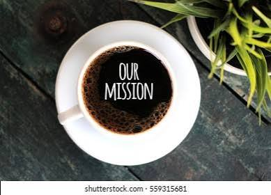

About Brew & Bean
Our story, our mission, and the people behind the coffee.
Our Story
Brew & Bean Coffee Co. was founded in 2018 by siblings Sarah and James van der Merwe in Cape Town. What started as a small coffee cart at local farmers' markets has grown into a beloved neighbourhood coffee shop and micro-roastery.
Sarah, a former barista champion, and James, a trained agronomist, combined their passion for coffee and sustainability to create a business that values quality, ethics, and community.
Today, we source beans directly from small-scale farmers in Ethiopia, Colombia, and Rwanda, roasting them in-house to unlock unique flavour profiles.

Our Mission
To bring exceptional, ethically sourced coffee to our community while fostering a warm, welcoming space where connections are brewed daily.

Our Vision
To become Cape Town's most trusted artisan coffee roaster, known for quality, sustainability, and community engagement.
Meet Our Team
Sarah van der Merwe
Co-Founder & Head Barista
Sarah brings 10 years of coffee experience and a passion for perfecting the art of brewing.
James van der Merwe
Co-Founder & Master Roaster
James uses his agronomy background to source the best beans and roast them to perfection.
Lindiwe Nkosi
Operations Manager
Lindiwe ensures every customer has a welcoming experience and the shop runs smoothly.
Our Core Values
- Quality: We never compromise on the quality of our coffee or service.
- Ethics: We source fairly and pay sustainable prices to farmers.
- Sustainability: We minimise our environmental footprint at every step.
- Community: We build connections and welcome everyone.
- Passion: We love what we do, and it shows in every cup.